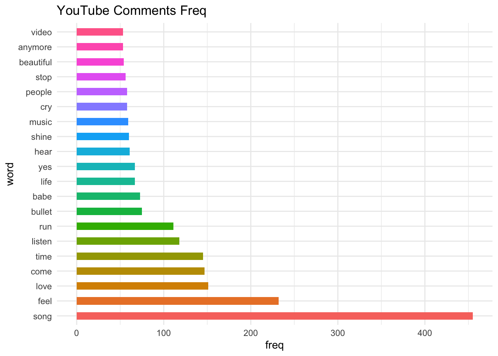
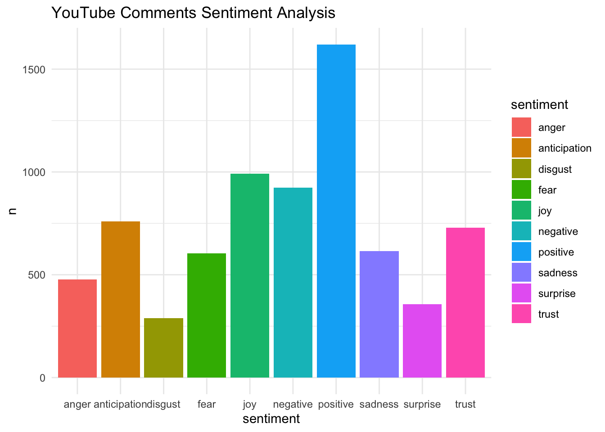
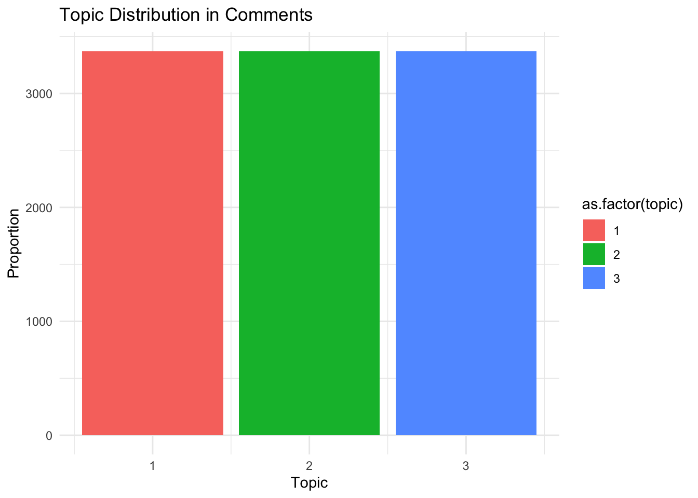

2 Text Mining of Youtube Comments
2.1 準備 R + Python 環境
#準備Anaconda（虛擬環境管理平台，解決pip安裝包衝突）
#準備ChromeDriver （藉由Py自動化控制Google Chrome）
library(reticulate) #用來整合Py的R套件
#設定Python環境
use_python("/opt/anaconda3/envs/emajor/bin/python", required = T)
use_condaenv("emajor")
# 安裝pandas模組
# py_install("pandas")
# （ Selenium & webdriver_manager 要用終端機conda安裝 ）
#開啟Ptyhon腳本，用Py的套件進行爬蟲2.2 建置 Dataset
2.2.1 By API 尋找影片標籤
from googleapiclient.discovery import build
api_key = 'YOUR_API_KEY'
youtube = build('youtube', 'v3', developerKey=api_key)
def get_video_categories(region_code='TW'):
categories_response = youtube.videoCategories().list(
part='snippet',
regionCode=region_code
).execute()
categories = []
for item in categories_response['items']:
categories.append({
'id': item['id'],
'title': item['snippet']['title']
})
return categories
categories = get_video_categories()
for category in categories:
print(f"Category ID: {category['id']}, Title: {category['title']}")# 讀取 CSV 文件
file_path <- "/Users/liam/Desktop/NTNU/碩二/1131/文字探勘/Category.csv"
data <- read.csv(file_path)
# 顯示前 5 行的具體列
library(knitr)
kable(data[, c("ID", "Category")], caption = "YouTube 音樂類影片前五列數據")| ID | Category |
|---|---|
| Category ID: 1 | Title: Film & Animation |
| Category ID: 2 | Title: Autos & Vehicles |
| Category ID: 10 | Title: Music |
| Category ID: 15 | Title: Pets & Animals |
| Category ID: 17 | Title: Sports |
| Category ID: 18 | Title: Short Movies |
| Category ID: 19 | Title: Travel & Events |
| Category ID: 20 | Title: Gaming |
| Category ID: 21 | Title: Videoblogging |
| Category ID: 22 | Title: People & Blogs |
| Category ID: 23 | Title: Comedy |
| Category ID: 24 | Title: Entertainment |
| Category ID: 25 | Title: News & Politics |
| Category ID: 26 | Title: Howto & Style |
| Category ID: 27 | Title: Education |
| Category ID: 28 | Title: Science & Technology |
| Category ID: 30 | Title: Movies |
| Category ID: 31 | Title: Anime/Animation |
| Category ID: 32 | Title: Action/Adventure |
| Category ID: 33 | Title: Classics |
| Category ID: 34 | Title: Comedy |
| Category ID: 35 | Title: Documentary |
| Category ID: 36 | Title: Drama |
| Category ID: 37 | Title: Family |
| Category ID: 38 | Title: Foreign |
| Category ID: 39 | Title: Horror |
| Category ID: 40 | Title: Sci-Fi/Fantasy |
| Category ID: 41 | Title: Thriller |
| Category ID: 42 | Title: Shorts |
| Category ID: 43 | Title: Shows |
| Category ID: 44 | Title: Trailers |
2.2.2 By API 查找符合條件的 url 清單
import random
import pandas as pd
from googleapiclient.discovery import build
api_key = 'YOUR_API_KEY'
youtube = build('youtube', 'v3', developerKey=api_key)
keyword = 'Music'
def search_videos(max_results=50):
search_response = youtube.search().list(
part='snippet',
type='video',
q=keyword,
maxResults=max_results,
order='viewCount'
).execute()
video_ids = [item['id']['videoId'] for item in search_response['items']]
video_details = youtube.videos().list(
id=','.join(video_ids),
part='snippet,statistics'
).execute()
videos_over_100m = []
for item in video_details['items']:
view_count = int(item['statistics']['viewCount'])
if view_count >= 10000000:
videos_over_100m.append({
'id': item['id'],
'title': item['snippet']['title'],
'url': f"https://www.youtube.com/watch?v={item['id']}",
'views': view_count
})
return videos_over_100m
all_videos = []
attempts = 0
while len(all_videos) < 200 and attempts < 5:
videos = search_videos(max_results=50)
new_videos = [video for video in videos if video['id'] not in [v['id'] for v in all_videos]]
if new_videos:
all_videos.extend(new_videos)
attempts = 0
else:
attempts += 1
df = pd.DataFrame(all_videos)
df.to_csv('/Users/liam/Desktop/NTNU/碩二/1131/文字探勘/youtube_music_videos.csv', index=False)# 讀取 CSV 文件
file_path <- "/Users/liam/Desktop/NTNU/碩二/1131/文字探勘/youtube_Music2_videos_over_100m.csv"
data <- read.csv(file_path)
# 顯示前 5 行的具體列
library(knitr)
kable(head(data[, c("title", "url","views")]), caption = "YouTube 音樂類影片前五列數據")| title | url | views |
|---|---|---|
| OneRepublic - Counting Stars | https://www.youtube.com/watch?v=hT_nvWreIhg | 4080610186 |
| One Direction - Story of My Life | https://www.youtube.com/watch?v=W-TE_Ys4iwM | 1020521832 |
| Green Day - Boulevard Of Broken Dreams [Official Music Video] | https://www.youtube.com/watch?v=Soa3gO7tL-c | 832708100 |
| G-Eazy & Halsey - Him & I (Official Video) | https://www.youtube.com/watch?v=SA7AIQw-7Ms | 769487129 |
| Becky G - Shower | https://www.youtube.com/watch?v=50-_oTkmF5I | 509911847 |
| Berlin - Take My Breath Away (Official Video - Top Gun) | https://www.youtube.com/watch?v=Bx51eegLTY8 | 459454557 |
2.2.3 爬取留言
import pandas as pd
from selenium import webdriver
from selenium.webdriver.chrome.service import Service
from selenium.webdriver.chrome.options import Options
from selenium.webdriver.common.by import By
from selenium.webdriver.support.ui import WebDriverWait
from selenium.webdriver.support import expected_conditions as EC
import time
video_data = pd.read_csv('/Users/liam/Desktop/NTNU/碩二/1131/文字探勘/youtube_music_videos.csv')
options = Options()
options.add_argument("--disable-blink-features=AutomationControlled")
options.add_argument("--disable-infobars")
options.add_argument("--disable-extensions")
options.add_argument("start-maximized")
options.add_experimental_option("excludeSwitches", ["enable-automation"])
options.add_experimental_option('useAutomationExtension', False)
service = Service(executable_path="/Users/liam/Desktop/NTNU/碩二/1131/文字探勘/chromedriver-mac-arm64/chromedriver")
driver = webdriver.Chrome(service=service, options=options)
def scroll_to_load_comments():
last_height = driver.execute_script('return document.documentElement.scrollHeight')
while True:
driver.execute_script("window.scrollBy(0, 800);")
time.sleep(2)
comments = driver.find_elements(By.XPATH, '//*[@id="content-text"]')
if len(comments) >= 30:
break
new_height = driver.execute_script('return document.documentElement.scrollHeight')
if new_height == last_height:
break
last_height = new_height
def get_comments(video_url):
driver.get(video_url)
try:
scroll_to_load_comments()
WebDriverWait(driver, 10).until(
EC.presence_of_element_located((By.XPATH, '//*[@id="content-text"]'))
)
time.sleep(2)
comments = driver.find_elements(By.XPATH, '//*[@id="content-text"]')[:30]
return [comment.text for comment in comments]
except Exception as e:
print(f"留言區未加載: {e}")
return []
all_comments = []
for index, row in video_data.iterrows():
video_url = row['url']
title = row['title']
views = row['views']
try:
comments = get_comments(video_url)
for comment in comments:
all_comments.append({
'title': title,
'url': video_url,
'views': views,
'comment': comment
})
except Exception as e:
print(f"無法爬取 {video_url}: {e}")
df = pd.DataFrame(all_comments)
df.to_csv('/Users/liam/Desktop/NTNU/碩二/1131/文字探勘/youtube_comments.csv', index=False)
driver.quit()# 讀取 CSV 文件
file_path <- "/Users/liam/Desktop/NTNU/碩二/1131/文字探勘/youtube_comments_music.csv"
data <- read.csv(file_path)
# 顯示前 5 行的具體列
library(knitr)
kable(head(data[, c("title", "comment")]), caption = "YouTube 音樂類影片前五列數據")| title | comment |
|---|---|
| Taylor Swift - Blank Space | “I’m a nightmare dressed like a daydream” |
| Every teacher ever. | |
| Taylor Swift - Blank Space | I’ll never understand how Taylor rocks every single outfit she wears |
| Taylor Swift - Blank Space | No, your not the only one watching this during quarantine. |
| Taylor Swift - Blank Space | Taylor should get an award for her amazing acting skills in this masterpiece.. |
| Taylor Swift - Blank Space | Look what you made her do |
| Taylor Swift - Blank Space | 7 years later and this song still hits different. Truly a masterpiece. |
2.3 文字探勘分析
2.3.1 套件準備
install.packages("tm")
install.packages("SnowballC")
install.packages("jiebaR")
install.packages("tidytext")
install.packages("dplyr")
install.packages("ggplot2")
install.packages("wordcloud")
install.packages("syuzhet")
install.packages("igraph")
install.packages("topicmodels")
install.packages("forcats")
install.packages("textstem")
install.packages("udpipe")2.3.2 文本清理
##
## Attaching package: 'dplyr'## The following objects are masked from 'package:stats':
##
## filter, lag## The following objects are masked from 'package:base':
##
## intersect, setdiff, setequal, unionlibrary(ggplot2)
# 讀取 CSV 文件
file_path <- "/Users/liam/Desktop/NTNU/碩二/1131/文字探勘/youtube_comments_music.csv"
comments_df <- read.csv(file_path)
# 假設你的評論列名是 'comment'
comments <- comments_df$comment
# 將評論轉換為資料框
comments_df <- data.frame(line = 1:length(comments), text = comments)
# 清理文本
comments_df$text <- tolower(comments_df$text) # 轉換為小寫
comments_df$text <- gsub("[[:punct:]]", " ", comments_df$text) # 移除標點符號
comments_df$text <- gsub("[[:digit:]]", " ", comments_df$text) # 移除數字
comments_df$text <- gsub("\\s+", " ", comments_df$text) # 移除多餘空白
# 將評論拆分為單詞
wordfile <- unnest_tokens(comments_df, word, text, token = "words")
# 加載標準停用詞列表
stop_words <- data.frame(tidytext::stop_words)
# 移除停用詞
wordfile <- anti_join(wordfile, stop_words)## Joining with `by = join_by(word)`# 擴展停用詞列表，加入縮寫詞和口語詞
custom_stop_words <- data.frame(word = c("hai","bhai","don",
"ve", "ll", "na", "el",
"la", "️️️", "’ll", "‘till
", "’ve", "‘littl", "’re",
"“’m", "“’re", "“bon",
"“copi", "“don’t","you",
"the", "and", "you", "that", "for"))
# 移除自定義的停用詞
wordfile <- anti_join(wordfile, custom_stop_words)## Joining with `by = join_by(word)`##進階處理
library(forcats)
library(SnowballC)
# 使用詞幹提取來處理複數詞(怪怪的)
#wordfile$word <- wordStem(wordfile$word, language = "en")
# 加載 textstem 套件（better）
library(textstem)## Loading required package: koRpus.lang.en## Loading required package: koRpus## Loading required package: sylly## For information on available language packages for 'koRpus', run
##
## available.koRpus.lang()
##
## and see ?install.koRpus.lang()# 使用 lemmatize_words 進行詞形還原
wordfile$word <- lemmatize_words(wordfile$word)
# 重新計算詞頻
wordfreq <- count(wordfile, word, sort = TRUE)
# 查看前 20 個最常見的詞
wordfreqdf20 <- wordfreq[1:20,]
# 打印結果
wordfreqdf20## word n
## 1 song 455
## 2 feel 232
## 3 love 151
## 4 come 147
## 5 time 145
## 6 listen 118
## 7 run 111
## 8 bullet 75
## 9 babe 73
## 10 life 67
## 11 yes 67
## 12 hear 61
## 13 shine 60
## 14 music 59
## 15 cry 58
## 16 people 58
## 17 stop 56
## 18 beautiful 54
## 19 anymore 53
## 20 video 532.3.3 Case 1 詞頻&文字雲
# 繪製詞頻圖
ggplot(data = wordfreqdf20, aes(x = word, y = n, fill = word)) +
geom_bar(stat = "identity", position = "dodge", width = 0.5) +
coord_flip() +
labs(title = "YouTube Comments Freq", x = "word", y = "freq") +
theme_minimal() +
theme(legend.position = "none")
## Loading required package: RColorBrewer# 構建詞與詞頻數據，假設你的詞頻表已經計算好了
wordfreq <- count(wordfile, word, sort = TRUE)
# 繪製文字雲
wordcloud(words = wordfreq$word,
freq = wordfreq$n,
min.freq = 4, # 設定最低出現頻率
random.order = FALSE, # 詞語按照頻率大小排序
colors = brewer.pal(8, "Dark2")) # 設定顏色
2.3.4 Case 2 情感分析
# 加載必要的套件
library(tidytext)
library(dplyr)
# 使用 "nrc" 情感詞典進行情感分析
wordfile_sentiments <- inner_join(wordfile, get_sentiments("nrc"), by = "word")## Warning in inner_join(wordfile, get_sentiments("nrc"), by = "word"): Detected an unexpected many-to-many
## relationship between `x` and `y`.
## ℹ Row 1 of `x` matches multiple rows
## in `y`.
## ℹ Row 8007 of `y` matches multiple
## rows in `x`.
## ℹ If a many-to-many relationship is
## expected, set `relationship =
## "many-to-many"` to silence this
## warning.# 允許多對多關係
wordfile_sentiments <- inner_join(wordfile, get_sentiments("nrc"), by = "word", relationship = "many-to-many")
# 統計各種情感的出現頻率
sentiment_counts <- wordfile_sentiments %>%
count(sentiment, sort = TRUE)
# 繪製情感條形圖
ggplot(sentiment_counts, aes(x = sentiment, y = n, fill = sentiment)) +
geom_bar(stat = "identity") +
theme_minimal() +
ggtitle("YouTube Comments Sentiment Analysis")
2.3.5 Case 3 主題模型
## Loading required package: NLP##
## Attaching package: 'NLP'## The following object is masked from 'package:ggplot2':
##
## annotate##
## Attaching package: 'tm'## The following object is masked from 'package:koRpus':
##
## readTagged# 構建文檔-詞矩陣 (DTM)
dtm_clean <- DocumentTermMatrix(Corpus(VectorSource(wordfile$word)))
# 檢查 DTM 中的空行數量
row_sums <- rowSums(as.matrix(dtm_clean))
dtm_clean <- dtm_clean[row_sums > 0, ] # 去除沒有詞語的行
# 設置主題數量 (例如 5 個主題)
lda_model <- LDA(dtm_clean, k = 3, control = list(seed = 1234))
# 顯示每個主題中的關鍵詞
topics <- terms(lda_model, 10)
print(topics)## Topic 1 Topic 2 Topic 3
## [1,] "song" "feel" "song"
## [2,] "time" "yes" "love"
## [3,] "come" "come" "run"
## [4,] "love" "hear" "babe"
## [5,] "listen" "time" "time"
## [6,] "feel" "listen" "come"
## [7,] "shine" "babe" "cry"
## [8,] "baby" "bullet" "stop"
## [9,] "beautiful" "music" "listen"
## [10,] "talk" "song" "anymore"## Topic 1 Topic 2 Topic 3
## 1 song feel song
## 2 time yes love
## 3 come come run
## 4 love hear babe
## 5 listen time time
## 6 feel listen come
## 7 shine babe cry
## 8 baby bullet stop
## 9 beautiful music listen
## 10 talk song anymore# 提取每個評論的主題分佈
topic_distribution <- tidy(lda_model, matrix = "gamma")
# 可視化評論中的主題分佈
ggplot(topic_distribution, aes(x = topic, y = gamma, fill = as.factor(topic))) +
geom_bar(stat = "identity") +
theme_minimal() +
labs(title = "Topic Distribution in Comments", x = "Topic", y = "Proportion")
2.3.6 Case 4 詞性標注
# 加載 udpipe 套件
library(udpipe)
# 下載預訓練的英文模型
ud_model <- udpipe_download_model(language = "english")
# 加載模型
ud_model <- udpipe_load_model(ud_model$file_model)
# 使用模型進行詞性標註
pos_result <- udpipe_annotate(ud_model, x = comments_df$text)
# 轉換為數據框格式
pos_df <- as.data.frame(pos_result)
# 顯示詞性標註的結果
head(pos_df, 10)